Các vấn đề thường gặp
01Hai giao diện và các tab của lớp
Địa chỉ đăng nhập: lms.vnu.edu.vn;ĐĂNG NHẬP VỚI TÀI KHOẢN VNU: tên đăng nhập và mật khẩu là tài khoản email VNU.
- Nếu không thấy các chức năng quản lý lớp, các Thầy cô xem lại xem có phải đang ở vai trò sinh viên: bấm Chuyển vai trò giảng viên trên thanh trên cùng. Ngược lại, Chuyển vai trò sinh viên để xem lớp dưới giao diện của sinh viên.
- Trang Lớp học liệt kê các lớp được phân công. Bấm tên lớp hoặc biểu tượng răng cưa để vào lớp.
- Ứng dụng điện thoại chỉ dành cho người học; Việc quản lý lớp chỉ thực hiện trên máy tính.
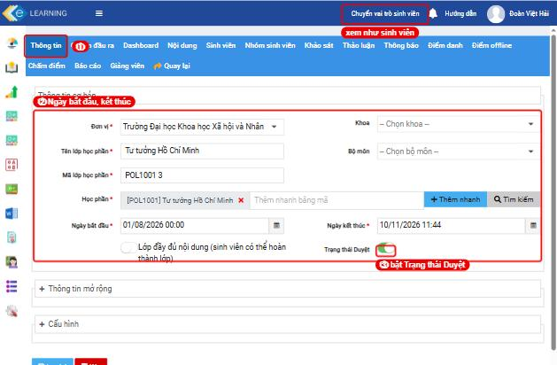
| Tab trong lớp | Cách dùng |
|---|---|
| Thông tin | Ngày bắt đầu, kết thúc; công tắc Trạng thái Duyệt (phải bật thì sinh viên mới vào học được) |
| Nội dung | Cây bài giảng; thêm tài liệu, video, buổi trực tuyến, bài tập, bài kiểm tra; chấm bài tập; đặt Hệ số, điều kiện hoàn thành |
| Sinh viên | Thêm sinh viên, tìm, lọc; Nhật ký học tập của từng em |
| Nhóm sinh viên | Chia nhóm (giao bài theo nhóm) |
| Thảo luận | Diễn đàn, chủ đề thảo luận, chủ đề chấm điểm |
| Thông báo | Thông báo cho lớp |
| Điểm danh · Điểm offline | Điểm danh (Lần 1…5, nhập Excel, QRCode) · đầu điểm ngoài hệ thống (chuyên cần, thuyết trình…) |
| Chấm điểm | Chấm bài kiểm tra / thi có câu tự luận (không phải bài tập) |
| Báo cáo | Danh sách sinh viên, Kết quả nội dung học, Báo cáo thảo luận, Tổng hợp điểm; Xuất báo cáo |
02Chuẩn bị lớp
Thêm sinh viên
Các lớp mở ra có thể không có sẵn sinh viên. Giảng viên tự thêm theo danh sách lớp chuẩn.
- Lấy danh sách chuẩn ở Cổng thông tin nhập điểm (nhapdiem.ussh.vnu.edu.vn): In danh sách lớp học phần → chọn lớp → Xuất ra word. Đây là danh sách ở đây luôn cập nhật.
- Thêm từng em: tab Sinh viên → gõ mã sinh viên vào ô Nhập tài khoản → + Thêm sinh viên.
- Thêm từ file Excel: + Thêm mới → Thêm từ file excel → bấm Tại đây! tải mẫu → điền cột Tài khoản(*)/Username (mã sinh viên) → + Chọn tệp → Nhập từ Excel.
- Kiểm tra lại xem dòng Tổng số ở tab Sinh viên có khớp danh sách lớp không.
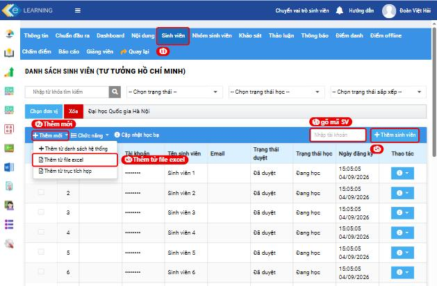
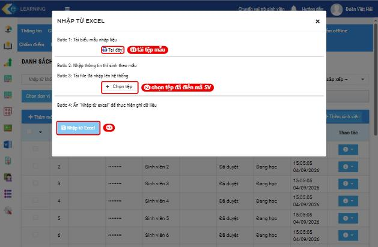
Các thầy cô lưu ý: tệp Word của cổng nhập điểm không tải thẳng lên được. Tệp DanhSachLopHocPhan.doc thực chất là trang web; đổi đuôi thành .xls cũng không up được. Các thầy cô cần chép mã sinh viên sang tệp Excel mẫu rồi mới thao tác.
Cách chép bài giảng gốc Từ lớp mới, chưa co bài giảng
- Chỉ chép vào lớp đang chưa có nội dung.
(*) Lưu ý: nếu bấm Thực hiện hai lần trở lên, hoặc chép vào lớp đã có nội dung, thì mỗi thư mục bài giảng xuất hiện nhiều lần. - Ô Mã lớp học gõ đúng mã trên LMS.
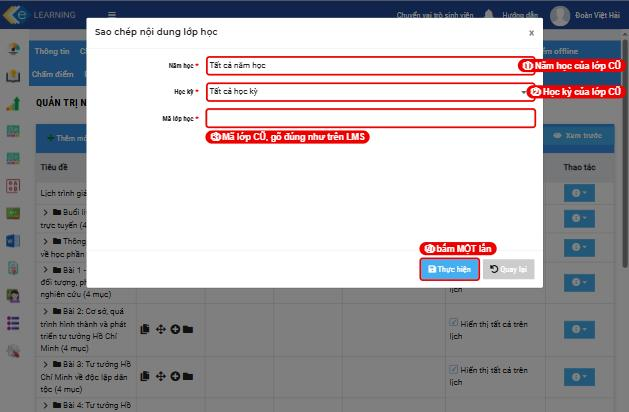
Mở lớp cho sinh viên video
Tab Thông tin: kiểm tra Ngày bắt đầu, Ngày kết thúc, bật Trạng thái Duyệt → Lưu lại. Thời hạn của từng bài đặt riêng trong từng bài (mục 04).
03Nội dung và buổi trực tuyến
- Cây theo tuần: Tạo nhanh nhóm nội dung → Tên nhóm “Tuần”, Số lượng 15 → Xác nhận tạo một lần Tuần 1 … Tuần 15. video
- Thêm tài liệu, video, link: + Thêm mới → chọn loại → chọn cấp cha (tuần nào), vị trí, tên → + Chọn tệp → Lưu lại. video
- Công tắc Bắt buộc + Điều kiện hoàn thành(phút): sinh viên phải mở mục đó trên LMS đủ số phút này thì mục mới được tích xanh.
Luu ý: Nếu thời gian đặt quá cao thì nhiều em “học rồi mà không xanh” (mục 08). - Buổi học trực tuyến: + Thêm mới → Google Meet / MS Teams / Zoom → Đăng nhập → Lưu lại. Dán link Zoom vào mục loại Liên kết cũng được, sinh viên vẫn vào được.
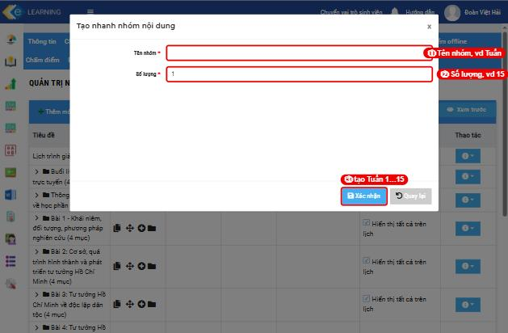
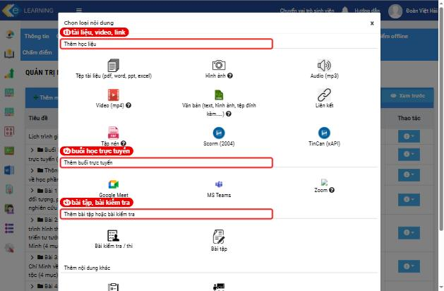
Cần kiểm tra lại mục trống.
3 mục “Tài liệu buổi livestream” loại Văn bản bật Bắt buộc nhưng chưa có nội dung, sinh viên mở ra chỉ thấy trang trắng. Để tránh trường hợp này, các Thầy, Cô nên dùng chức năng ⓘ → Xem trước để xem mục như sinh viên thấy.
04Bài tập và bài kiểm tra
Bài tập (sinh viên nộp tệp) video
- + Thêm mới → Bài tập → nhóm nội dung, vị trí, Tên bài tập, Mô tả yêu cầu hoặc +Thêm tệp đính kèm.
- Đặt Bài tập bắt buộc, Hệ số, Loại đầu điểm (vd Đánh giá giữa kỳ), Thời hạn nộp bài (Từ ngày – Đến ngày), định dạng tệp, số tệp tối đa → Lưu lại.
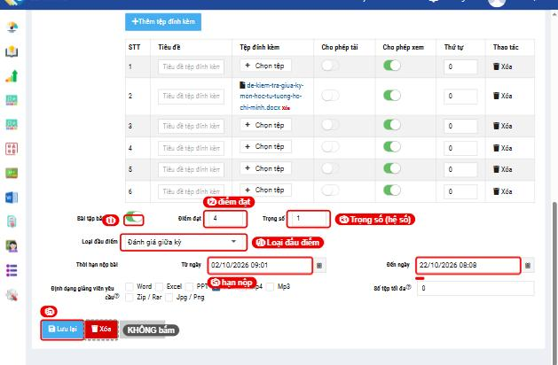
Bài kiểm tra / thi video
- + Thêm mới → Bài kiểm tra / thi → tab Thông tin: thang điểm, Điều kiện hoàn thành (điểm), thời gian làm bài, số lần làm, Lấy kết quả, mật khẩu, Thời gian từ … Đến, Hệ số, Loại đầu điểm.
- Tab Câu hỏi (gõ trực tiếp hoặc nhập Excel; 7 loại câu) → tab Cấu trúc (điểm mỗi câu, số lượng lấy).
- Quay lại tab Thông tin, đổi Trạng thái sang Kích hoạt → Cập nhật.
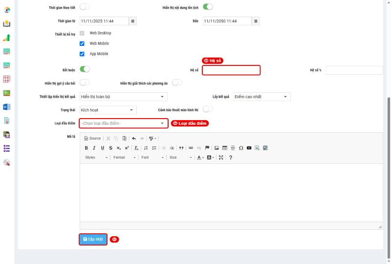
Chế độ “Soạn thảo” bật thì sinh viên sẽ không làm được.
Sinh viên hết giờ thì hệ thống tự thu bài.
Dùng lại đề thicho nhiều lớp: menu ≡ → Dữ liệu cá nhân → Thi - Kiểm tra (ngân hàng câu hỏi, đề thi); đưa vào lớp bằng công tắc Sử dụng nguồn có sẵn.
05Thảo luận
- Tab Thảo luận có sẵn box Thảo luận chung (chủ đề “Hỏi đáp, hỗ trợ”) và box Nội dung học (mỗi bài giảng là một chủ đề).
- Tạo chủ đề: Thêm mới chủ để → Tiêu đề, Mô tả → Lưu lại.
Chủ đề có điểm: Chủ để chấm điểm → thang điểm, cách tính, loại đầu điểm, trọng số. - Đăng câu hỏi cho sinh viên: bấm tên chủ đề → Thêm thảo luận.
- Lấy số liệu: tab Báo cáo → Báo cáo thảo luận → Xuất báo cáo (số bài tạo, phản hồi, đã chấm, điểm thảo luận của từng sinh viên).
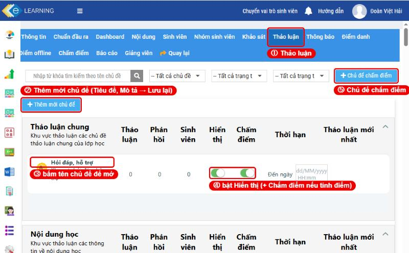
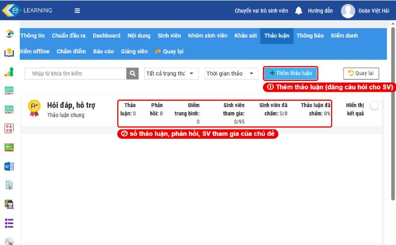
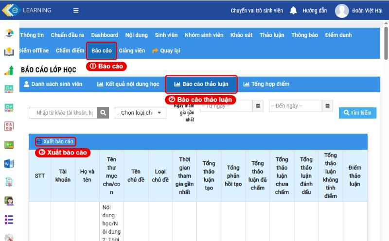
06Chấm bài và công bố điểm đã kiểm tra
Bài tập không chấm ở tab Chấm điểm.
Tab Chấm điểm chỉ có bài kiểm tra / thi.
Để chấm bài sinh viên nộp (vd Bài tập giữa kỳ), làm theo hướng dẫn dưới đây:
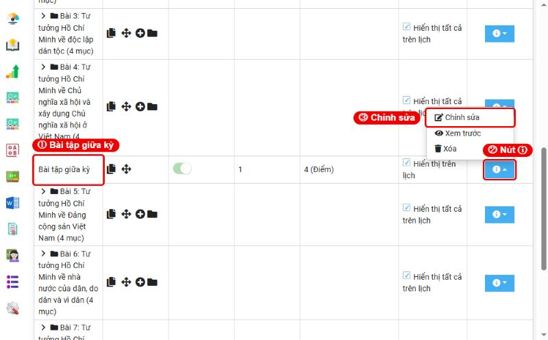
- Ô Trạng thái chọn Đã nộp bài - GV chưa chấm để chỉ còn bài cần chấm (bảng mặc định liệt kê cả lớp, 20 em một trang).
- Gõ điểm vào ô Điểm, hoặc Thao tác → Chi tiết bài làm để xem bài, nhận xét → Lưu điểm.
- Tải nhiều bài một lần: tích chọn → Tải tệp đính kèm.
- Chấm xong, bật Hiển thị điểm cho sinh viên. Chưa bật thì sinh viên không thấy điểm.
Nhập điểm hàng loạt bằng Excel
- Cần tắt chức năng Hiển thị điểm cho sinh viên.
Nếu chức năng này đang bật, hệ thống sẽ báo “Không thể nhập điểm khi đang bật hiển thị điểm cho sinh viên”. - Nhập điểm chấm excel → tải mẫu DanhSachSinhVienBaiTap.xlsx → điền điểm khớp theo tài khoản (mã sinh viên) → tải lên → xem tệp lỗi nếu có.
- Bật lại hiển thị điểm.
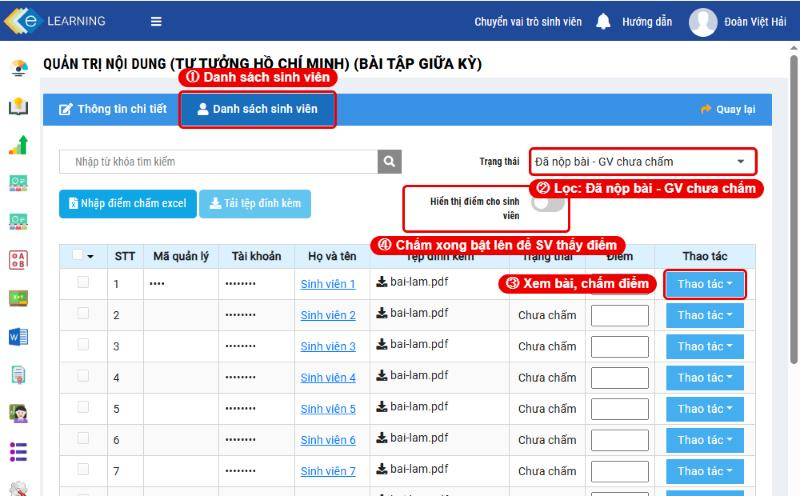
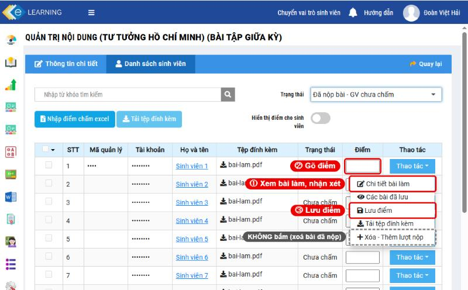
07Hệ số, loại đầu điểm, tổng hợp điểm
“Điểm tổng kết” sinh viên thấy được tính thế nào
- Trang lớp của sinh viên có ba ô độc lập: Hoàn thành …% (tiến độ xem, làm nội dung; không phải điểm), Thời gian học / Yêu cầu, và Điểm tổng kết.
- Điểm tổng kết chỉ lấy từ các mục có Hệ số. Ví dụ một lớp chỉ đặt hệ số cho Bài tập giữa kỳ: điểm tổng kết bằng đúng điểm giữa kỳ, bài trắc nghiệm không được tính, bài chưa chấm là 0. Vì vậy có em học 22% mà điểm cao hơn em học 84%.
- Điểm trên LMS chưa phải điểm học phần. Điểm học phần giảng viên tính theo đề cương rồi nhập ở cổng nhập điểm.
Đặt tỷ lệ các đầu điểm
- Từng bài cần tính điểm: Nội dung → ⓘ → Chỉnh sửa → nhập Hệ số, chọn Loại đầu điểm (Đánh giá thường xuyên / giữa kỳ / cuối kỳ / bổ sung) → Cập nhật.
- Báo cáo → Tổng hợp điểm → mục II. Thiết lập báo cáo loại đầu điểm: bảng bên phải liệt kê các loại đầu điểm, bấm nút sửa ở từng dòng nhập Hệ số (%) theo đề cương → Lưu lại thiết lập → Xuất báo cáo.
lưu ý Sau khi lưu xong, các Thầy, Cô nên xuất báo cáo và đối chiếu vài sinh viên trước khi dùng.
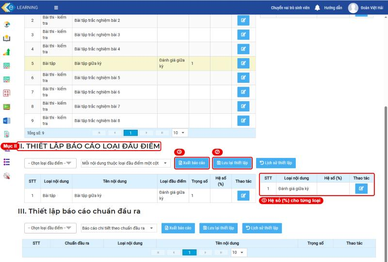
Điểm ngoài hệ thống (chuyên cần, thuyết trình): tab Điểm offline → + Thêm mới → Mã điểm, Tên, Hệ số, Loại đầu điểm → nhập từng em hoặc Excel. Tab Điểm danh chỉ ghi Lần 1…5, không tự thành điểm.
08Theo dõi tiến độ của sinh viên đã kiểm tra
- Bảng KẾT QUẢ HỌC TẬP liệt kê từng mục: Điều kiện hoàn thành, Bắt buộc, Điểm số / hệ số, Tổng thời gian truy cập (phút), Tổng lượt truy cập, Trạng thái hoàn thành.
- Mục được tích xanh khi thời gian LMS ghi nhận ≥ Điều kiện hoàn thành (bài trắc nghiệm: đạt số điểm điều kiện).
- Vấn đề thường gặp: sinh viên mở một tài liệu nhiều lượt nhưng LMS chỉ ghi được 1–2 phút.
Có thể do tải tệp về máy đọc hoặc mở rồi chuyển sang trang khác.
Cách xử lý: mở lại mục ngay trên LMS và học đủ số phút. - Mục đã đủ thời gian mà vẫn “Chưa hoàn thành” mới là lỗi hệ thống, báo nhóm Hỗ trợ LMS.
- Cả lớp: Báo cáo → Danh sách sinh viên (lọc, sắp xếp theo thời lượng, % hoàn thành) hoặc Kết quả nội dung học → xuất báo cáo chi tiết.
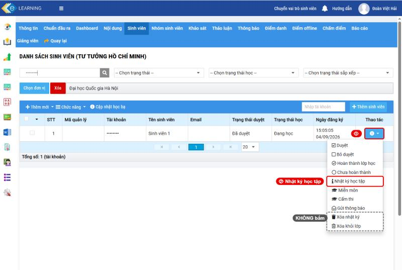
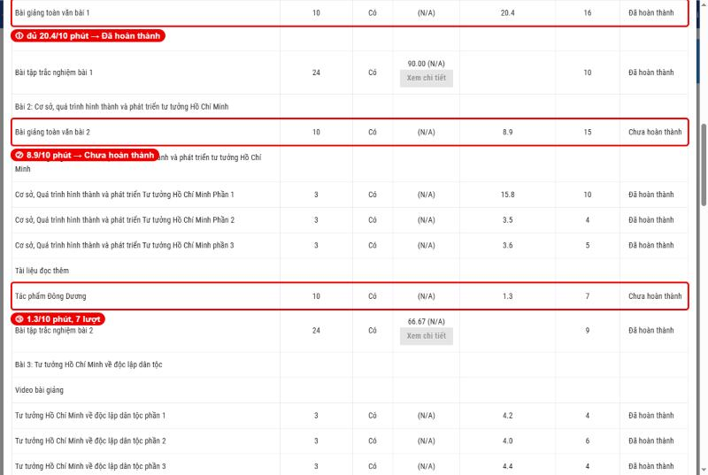
09Sự cố thường gặp
Các trường hợp dưới đây đều đã xảy ra ở lớp của thầy cô trong học kỳ này.
Lớp 0 sinh viên dù danh sách khoa có gần 100 em
- Nguyên nhân
- Từ HK1 2026-2027 lớp không còn được nạp sẵn danh sách như các kỳ trước.
- Xử lý
- Thêm bằng Excel theo mục 02.
Sĩ số trên LMS lệch danh sách lớp (vd 200 và 199)
- Nguyên nhân
- Thường là sinh viên học lại (mã khoá cũ), đổi lớp, hoặc thêm nhầm.
- Xử lý
- Đối chiếu theo mã sinh viên với danh sách “Xuất ra word”.
Để xóa sinh viên khỏi lớp: liên hệ Tổ hỗ trợ Phòng Đào tạo.
Nội dung bài giảng xuất hiện nhiều lần
- Nguyên nhân
- Bấm Thực hiện nhiều lần khi sao chép, hoặc chép vào lớp đã có nội dung.
- Xử lý
- Xoá bản thừa từ thư mục nhỏ nhất ra thư mục ngoài, chỉ khi lớp chưa bắt đầu học.
Phải xóa toàn bộ các thư mục, xóa từ cấp thông tin bé nhất rồi mới xóa được thư mục.
Không thấy bài sinh viên đã nộp
- Nguyên nhân
- Tìm ở tab Chấm điểm; bài dạng Bài tập không hiện ở đó.
- Xử lý
- Nội dung → ⓘ → Chỉnh sửa → Danh sách sinh viên (mục 06).
Nhập điểm Excel báo lỗi
- Nguyên nhân
- Đang bật “Hiển thị điểm cho sinh viên”, hoặc tệp không đúng mẫu tải từ chính bài đó.
- Xử lý
- Tắt hiển thị điểm, dùng đúng mẫu, khớp theo tài khoản; nhập xong bật lại.
Sinh viên thắc mắc điểm tổng kết không khớp % hoàn thành
- Nguyên nhân
- Điểm tổng kết chỉ lấy các mục có Hệ số; % hoàn thành là tiến độ.
- Xử lý
- Giải thích cho sinh viên; nếu muốn tính trắc nghiệm, thảo luận, chuyên cần thì đặt Hệ số (mục 07).
Sinh viên học đủ mà không được tích xanh
- Nguyên nhân
- Thời gian học của sinh viên chưa được LMS ghi nhận đủ điều kiện hoàn thành.
- Xử lý
- Xem Nhật ký học tập (mục 08); xem lại số phút điều kiện có hợp lý không.
Sinh viên làm hết mà báo cáo vẫn “chưa hoàn thành”
- Nguyên nhân
- Còn mục bắt buộc chưa đạt, hoặc lớp có hai mục bắt buộc trùng nhau (vd 2 mục “Bài tập giữa kỳ”): em đó nộp một mục nên % Hoàn thành bài tập chỉ đạt 1/2.
- Xử lý
- Xem Nhật ký học tập (mục 08) để biết mục bắt buộc nào còn thiếu. Mục bị trùng thì tắt Bài tập bắt buộc ở mục thừa; nếu là hai bài khác nhau thì đổi tên cho dễ phân biệt. Số % sinh viên chụp gửi có thể đã cũ, nên tra lại ở Báo cáo → Danh sách sinh viên.
Video bài giảng hiện khung trắng
- Nguyên nhân
- chưa chắc Có thể do trình duyệt, nhất là trên điện thoại. Video của một số lớp là gói SCORM, chạy trong khung riêng của LMS. Ở lớp đã kiểm tra, các sinh viên khác vẫn xem được nên không phải video hỏng đồng loạt.
- Xử lý
- Nhờ sinh viên mở lms.vnu.edu.vn bằng Chrome, tốt nhất trên máy tính, rồi xem lại. Nhật ký học tập (mục 08) cho biết video nào còn thiếu thời gian. Nút Xem trước của giảng viên có thể hiện trắng với loại video này, nên không dựa vào nút đó để kết luận video lỗi. Vẫn trắng thì chụp màn hình gửi nhóm hỗ trợ.
Màn hình hiện chữ lạ (vd cột “phụ tùng xe hơi”, “thái” thay cho “Trạng thái”)
- Nguyên nhân
- chưa chắc Có thể do chức năng autotranslate của trình duyệt.
- Xử lý
- Tắt tự dịch cho trang lms-admin.vnu.edu.vn rồi tải lại trang. Vẫn lỗi thì chụp màn hình gửi nhóm hỗ trợ.
Sinh viên không thấy lớp, không vào được
- Nguyên nhân
- Chưa được thêm vào lớp, hoặc lớp chưa bật Trạng thái Duyệt / hiển thị cho sinh viên.
- Xử lý
- Kiểm tra tab Sinh viên (em đó có trong lớp, “Đã duyệt” chưa) và tab Thông tin.
10Hỏi đáp
Thiết lập lớp
Lớp cùng học phần mà lớp 9 tuần, lớp 10 tuần?
Số tuần do lúc đăng ký lớp trên LMS chọn. chưa chắc Chưa có xác nhận chính thức về cách các môn chung được đăng ký, đề nghị liên lạc tổ Hỗ trợ.
Đặt hạn sinh viên phải học xong ở đâu?
Cả lớp: tab Thông tin → Ngày bắt đầu, Ngày kết thúc. Từng bài tập: Thời hạn nộp bài. Từng bài kiểm tra: Thời gian từ … Đến. Mốc chung của trường hỏi Tổ hỗ trợ Phòng Đào tạo.
Muốn một tài liệu chỉ một nhóm sinh viên xem?
Tạo nhóm ở tab Nhóm sinh viên, rồi trong tài liệu chọn Chọn nhóm sinh viên.
Có nhúng được Google Form, YouTube vào bài không?
Có. Thêm mục loại Văn bản, trong trình soạn thảo dùng nút IFrame và dán link vào ô URL.
Bài tập, kiểm tra
Sinh viên nộp nhầm bài, muốn nộp lại?
Nộp rồi sinh viên không tự sửa được. Trong danh sách bài nộp có mục Xóa - Thêm lượt nộp: mục này xoá bài đã nộp để em nộp lại, nên chỉ dùng khi chắc chắn và đã tải bài cũ về.
Sinh viên không vào được bài kiểm tra?
Kiểm tra: bài đã Kích hoạt chưa, đang trong khoảng “Thời gian từ … Đến” chưa, có mật khẩu không, số lần làm đã hết chưa.
Sinh viên xem lại bài kiểm tra được không?
Tuỳ cấu hình Thiết lập hiển thị kết quả trong bài kiểm tra.
Bài trắc nghiệm có tự chấm không?
Có. Câu tự luận trong bài kiểm tra / thi thì chấm ở tab Chấm điểm.
Bài tập không thấy ô Hệ số, Điều kiện hoàn thành?
Ở màn sửa Bài tập, hai ô này mang tên khác: Trọng số là hệ số, Điểm đạt là số điểm cần đạt để hoàn thành. Bài kiểm tra / thi thì ghi Hệ số và Điều kiện hoàn thành (điểm).
Điểm và tiến độ
Vì sao sinh viên chưa thấy điểm tôi đã chấm?
Chưa bật Hiển thị điểm cho sinh viên trong danh sách bài nộp của bài đó.
Điểm trên LMS có phải điểm học phần không?
Không. Điểm học phần chính thức vẫn nhập ở cổng nhập điểm của trường.
Lấy danh sách sinh viên chưa học để nhắc?
Tab Sinh viên → lọc -- Chọn trạng thái học -- (Chưa học, Đang học…), hoặc Báo cáo → Danh sách sinh viên → sắp xếp theo thời lượng học, % hoàn thành.
Mục I và mục II ở Tổng hợp điểm khác nhau thế nào?
Mục I liệt kê từng bài, cột Trọng số chính là Hệ số đã đặt ở bài đó, bảng bên phải đặt Hệ số (%) theo loại nội dung. Mục II chỉ liệt kê bài đã chọn Loại đầu điểm, bảng bên phải đặt Hệ số (%) theo từng loại đầu điểm. chưa chắc Chưa kiểm được công thức của bản xuất và việc tổng có phải bằng 100% không, nên xuất thử và đối chiếu vài sinh viên.
Tài khoản
Quên mật khẩu, không vào được email VNU?
LMS dùng chung mật khẩu với email VNU. Giảng viên liên hệ Phòng Quản trị nguồn lực để được cấp lại. Thông tin cá nhân (CCCD, mật khẩu) chỉ gửi riêng cho người phụ trách, không gửi vào nhóm.
11Nút cần cẩn thận
| Nút | Ở đâu | Vì sao |
|---|---|---|
| Thực hiện (sao chép) | Nội dung → Sao chép nội dung từ lớp khác | Bấm lần hai là nhân đôi toàn bộ nội dung |
| Xóa - Thêm lượt nộp | Danh sách bài nộp → Thao tác | Xoá bài sinh viên đã nộp |
| Xóa nhật ký · Xóa khỏi lớp | Sinh viên → ⓘ | Mất lịch sử học, mất sinh viên khỏi lớp |
| Hoàn thành lớp học · Chưa hoàn thành | Sinh viên → ⓘ | Đổi trạng thái học của em đó bằng tay |
| Mọi nút Xóa, thùng rác | Nội dung, đầu điểm, thông tin lớp | Không khôi phục được |
12Cần hỗ trợ
- Nhóm Zalo “Hỗ trợ LMS”: Zalo HaiDv LMS/nhóm Zalo
- Tổ hỗ trợ phòng Đào tạo (thêm lớp, thêm giảng viên, xoá sinh viên, xoá dữ liệu): Tổ hỗ trợ Phòng Đào tạo, cô Ngân, cô Hương, thầy Tâm, cô Lan Anh.
- Không gửi mật khẩu, số CCCD, thông tin cá nhân vào nhóm.